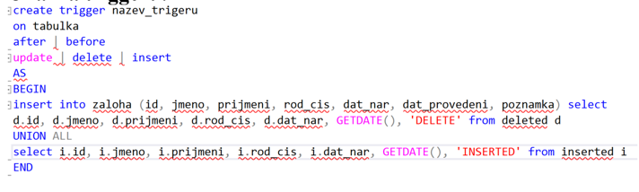

Speciální druh procedůry, která se automaticky spustí na základě akce, která se provede nad entitou
Ukládá se do paměti "Triggers" dané DB
Provádí se nad tabulkou - patří k ní
Nejde spustit samostatně
Je uložen na serveru

Akce triggeru
BEFORE--> trigger se spustí před provedením nějaké akce
AFTER--> trigger se spustí po provedení nějaké akce
-- Vytvoření triggeru, který zaznamená informace o nových zaměstnancích
CREATE TRIGGER trgAfterInsertEmployee
ON Employees
AFTER INSERT
AS
BEGIN
-- Deklarace proměnných pro uložení informací o novém zaměstnanci
DECLARE @EmployeeID INT, @FirstName NVARCHAR(50), @LastName NVARCHAR(50);
-- Získání nového zaměstnance pomocí kurzoru pro vložené záznamy (inserted)
SELECT @EmployeeID = EmployeeID, @FirstName = FirstName, @LastName = LastName
FROM inserted;
-- Záznam do auditní tabulky s informacemi o novém zaměstnanci
INSERT INTO EmployeeAudit (EmployeeID, FirstName, LastName, ActionDate)
VALUES (@EmployeeID, @FirstName, @LastName, GETDATE());
-- Výpis informace o provedeném záznamu
PRINT 'Nový zaměstnanec byl úspěšně zaznamenán do auditní tabulky.';
END;
Sum-up
Trigger--> speciální druh procedůry. Volá se automaticky po určité akci
asi tady můžeš mluvit o procedůrách cus trigger je tak na 5 min 💀